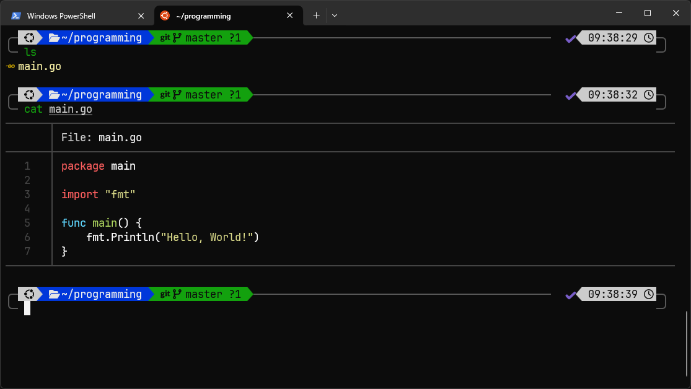
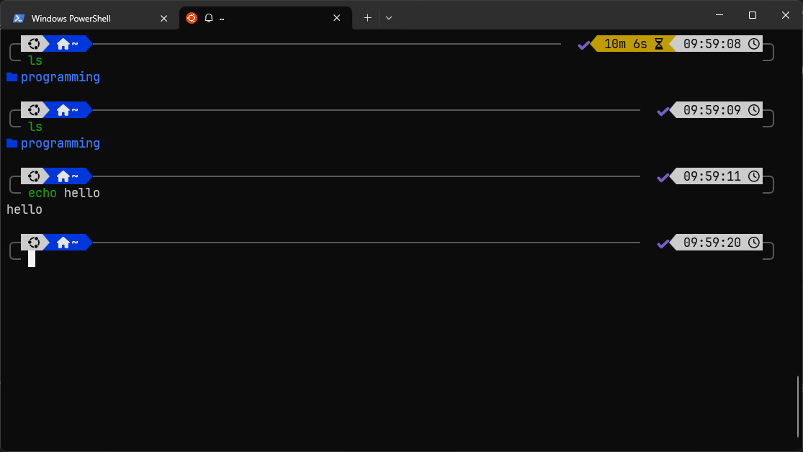
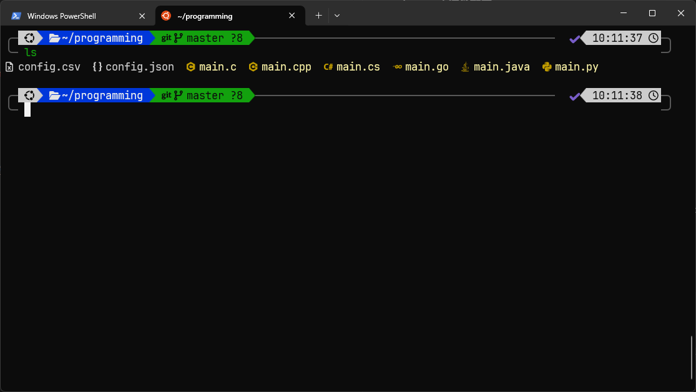

从零打造一个优美且高效的终端
以下操作均以WSL中的Ubuntu为例
配置后的终端
美观的prompt, 带图标的ls, 带语法高亮cat等…

Zsh + Oh My Zsh
Zsh是一个类似Bash的shell，功能更强大。由于直接配置Zsh有些麻烦，这里使用Oh My Zsh，一个流行的Zsh配置框架。
安装Zsh
Ubuntu/Debain:
1 | sudo apt update && sudo apt install zsh |
安装Oh My Zsh
Oh My Zsh 是 Zsh 的一款非常流行的配置框架，可以极大地增强 Zsh 的功能和可用性。
安装命令：
1 | sh -c "$(curl -fsSL https://raw.github.com/ohmyzsh/ohmyzsh/master/tools/install.sh)" |
安装完成后，Oh My Zsh 会自动为你配置好 Zsh，并将 Zsh 设置为默认的 shell。
配置.zshrc
~/.zshrc 文件是你配置 Zsh 的主要地方。安装 Oh My Zsh 后，.zshrc 文件已经被创建并包含一些默认设置。
.zshrc的部分内容:
1 | # ... |
你可以修改这个文件来定制 Zsh 和 Oh My Zsh。
安装powerlevel10k主题
我最喜欢的主题!
powerlevel10k主题需要Nerd Font字体支持。如果还没有，可以从Nerd Font下载页中下载自己喜欢的字体。推荐JetBrains Mono Nerd Font。
安装powerlevel10k:
1 | git clone --depth=1 https://github.com/romkatv/powerlevel10k.git ~/.oh-my-zsh/custom/themes/powerlevel10k |
启用主题:
用任意文本编辑器打开.zshrc, 修改其中的ZSH_THEME:
1 | ZSH_THEME="powerlevel10k/powerlevel10k" |
然后运行:
1 | source .zshrc |
会自动启动一个交互式配置，根据自己的喜好一步步选择即可。
若要在之后重新启动这个配置程序，运行p10k configure即可。
现在你的终端应该类似这样:

Oh My Zsh插件配置
Oh My Zsh自带了许多插件。一下是一些推荐:
-
sudo: 按两下Esc自动在命令前面加上sudo。
-
colored-man-pages: 彩色的man页。
-
git: 提供关于Git的命令别名。
-
extract:
x命令一件解压缩。
另外推荐两个需要另外安装的插件:
- zsh-autosuggestions：
自动建议之前用过的命令。
1 | git clone https://github.com/zsh-users/zsh-autosuggestions ~/.oh-my-zsh/custom/plugins/zsh-autosuggestions |
- zsh-syntax-highlighting：
正确的命令会用绿色显示，错误的则为红色。
1 | git clone https://github.com/zsh-users/zsh-syntax-highlighting.git ~/.oh-my-zsh/custom/plugins/zsh |
把需要的插件添加到plugins=(...)即可。例如: plugins=(git go zsh-autosuggestions)
其他美化工具
eza
eza是一个类似ls的程序，但支持显示图标。
安装: sudo apt install eza
推荐直接用eza替换ls。
把下面内容添加到.zshrc的底部:
1 | alias ls="eza --icons" # alias用于设置别名 |
效果类似这样:

bat
带语法高亮的cat。
安装: sudo apt install bat
把以下内容添加到.zshrc:
1 | alias cat="batcat" |
其他
还有很多，可以自行探索 :)
欢迎补充 :)